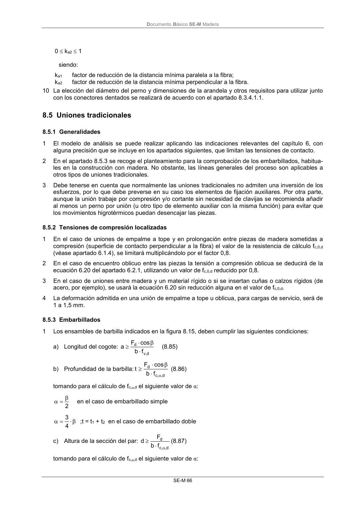
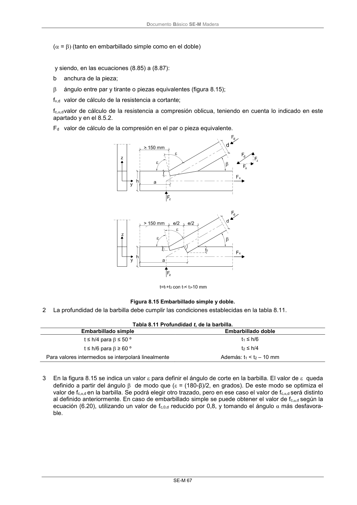

DB-SE-M · 8.5.3 Embarbillados · versión 2019-12-20 · capa oficial
Formatos: JSON compacto · Markdown · PDF fuente
Ámbito del documento · texto del ámbito · documento y tablas
ID técnico a0133 · PDF pág. 72-75 · jerarquía no validada por persona · contrastado con el literal de la página 72 (candidato tipográfico); no validado por persona · padre: raíz
8.5.3 Embarbillados 1 Los ensambles de barbilla indicados en la figura 8.15, deben cumplir las siguientes condiciones: a) Longitud del cogote: d ,v d f b cos F a (8.85) b) Profundidad de la barbilla: d , ,c d f b cos F t (8.86) tomando para el cálculo de fc,α,d el siguiente valor de α: 2 en el caso de embarbillado simple 4 3 ;t = t1 + t2 en el caso de embarbillado doble c) Altura de la sección del par: d , ,c d f b F d (8.87) tomando para el cálculo de fc,α,d el siguiente valor de α: DocumentoBásico SE-M Madera SE-M 67 ( = (tanto en embarbillado simple como en el doble) y siendo, en las ecuaciones (8.85) a (8.87): b anchura de la pieza; ángulo entre par y tirante o piezas equivalentes (figura 8.15); fv,d valor de cálculo de la resistencia a cortante; fc,,d valor de cálculo de la resistencia a compresión oblicua, teniendo en cuenta lo indicado en este apartado y en el 8.5.2. Fd valor de cálculo de la compresión en el par o pieza equivalente. Figura 8.15 Embarbillado simple y doble. 2 La profundidad de la barbilla debe cumplir las condiciones establecidas en la tabla 8.11. Tabla 8.11 Profundidad t, de la barbilla. Embarbillado simple Embarbillado doble t ≤ h/4 para ≤ 50 º t1 ≤ h/6 t ≤ h/6 para ≥ 60 º t2 ≤ h/4 Para valores intermedios se interpolará linealmente Además: t1 < t2 – 10 mm 3 En la figura 8.15 se indica un valor para definir el ángulo de corte en la barbilla. El valor de queda definido a partir del ángulo de modo que (ε = (180-β)/2, en grados). De este modo se optimiza el valor de fc,α,d en la barbilla. Se podrá elegir otro trazado, pero en ese caso el valor de fc,α,d será distinto al definido anteriormente. En caso de embarbillado simple se puede obtener el valor de fc,α,d según la ecuación (6.20), utilizando un valor de fc,0,d reducido por 0,8, y tomando el ángulo α más desfavora- ble. DocumentoBásico SE-M Madera SE-M 69


PDF fuente redistribuible: copia fiel enlazada en esta página (SHA256 verificado).